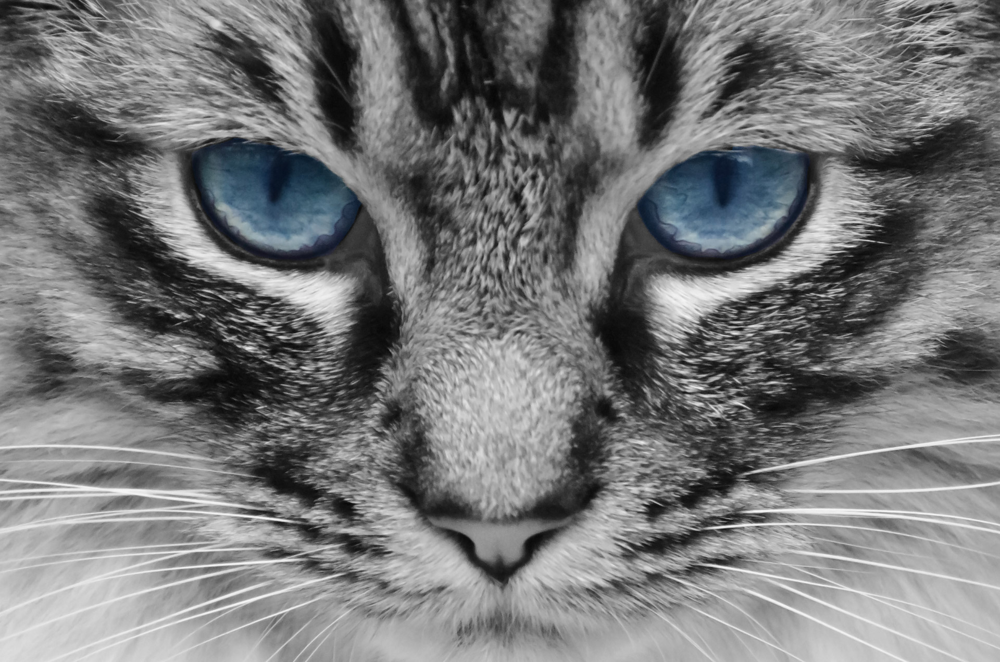

Welcome to Kenosha News by HuntersCode11 (Not to be confused with Kenosha News), your trusted source for local news in our beautiful city!
Spring break is on the horizon!
Read the full article hereLooking for more news beyond Kenosha? Check out the Milwaukee Journal Sentinel for more headlines and stories: Milwaukee Journal Sentinel
Stay Tuned! We're constantly updating our website with local news, so be sure to check back often!
For now, enjoy these pictures of cats!
"Cat" by Lilithis is licensed under CC BY-SA 2.0 

 .
.

"Cat" by strogoscope is licensed under CC BY 2.0 
 .
.
This one takes a while to load...